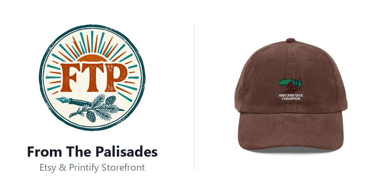

Building a storefront that does the busywork.
Built a seven-agent Python system to take designs from quality checks to published product listings.

The problem
Publishing apparel products involves repeated manual tasks: preparing artwork, checking print quality, writing listings, setting prices, and publishing to a storefront.
My contribution
I built a seven-agent Python system coordinating image QA, SEO, pricing, and Printify publishing. The pipeline removes backgrounds, checks resolution and transparency, calculates prices, and creates listings through the API.
The outcome
The Etsy storefront reached approximately 30,000 monthly impressions with no ad spend. The project demonstrates end-to-end ownership across technical implementation and business operations; impressions are a reach metric, not a revenue claim.
Product perspective
Automation works best when quality gates are designed into the workflow. I treated image preparation, print requirements, pricing, and publishing as connected product decisions.